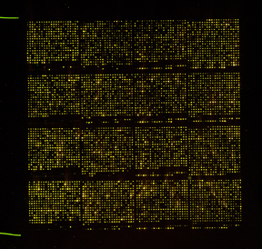
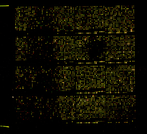
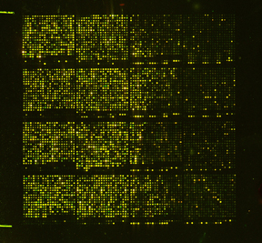
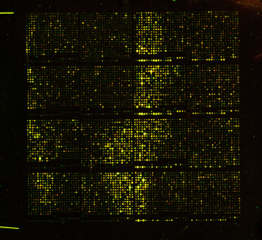

| Even Hybridization Across Entire Slide | Poor Hybridization on Left Side | Poor Hybridization on Right Side | Poor Hybridization on Both Sides |
|---|---|---|---|
|  |  |  |  |
Hybridization problems were solved by increasing the volume of hybridization solution to 85 microliters for a 24 X 60 mm flat cover slip. Thanks to all who offered suggestions!
Last modified: 8/31/15
| Home | GenMAPP | Research | Courses | People |
Publications | Women In Science | Links | Contact Us |
| Biology Department | Seaver College of Science and Engineering | Loyola Marymount University | Top |
This web page is not an official Loyola Marymount University web page. Comments on this page should be directed to kdahlquist[at]lmu[dot]edu.